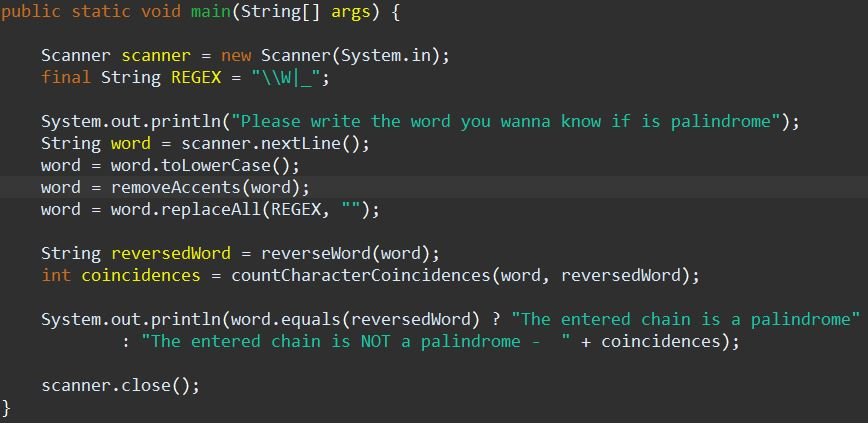
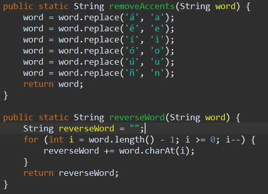
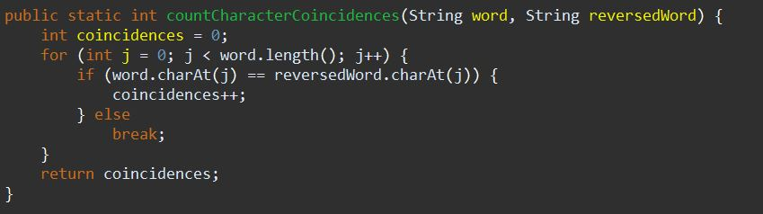

Here's the main code for compare to words and know if are
Palindromes :
public static String reverseWord(String word)
{
String reverseWord = "";
for (int i = word.length() - 1; i >= 0; i--)
{
reverseWord += word.charAt(i);
}
return reverseWord;
}
Now if you want to know if a word that writes the user by input is Palindrome or not.
The algorithm could be like:
When compiling the application you should only request the string to be captured which will be of length
"n".
Then show the following results:
In case it is a palindrome, it must print the phrase
"The string entered is a palindrome"
If it is not a palindrome, you must print the phrase
"The string entered is NOT a palindrome" and the number of characters that matched to determine
whether or not it is a palindrome.
So here's the code:
The main method
Get user word and manipulate it for better performance

Remove accents
Now remove the accents like latin ones and the 'ñ'

Count the coincidences of the words
Count the coincidences if the word is very similar
